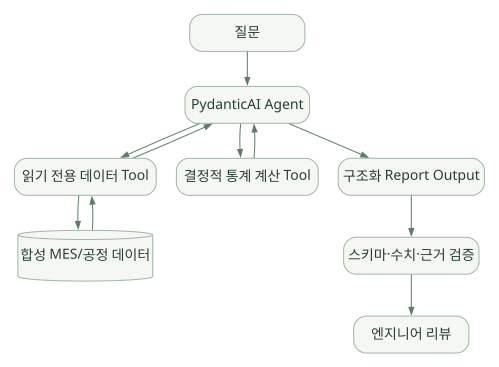

적용과 판단 / 단원 10
Typed Output을 검증 가능한 분석으로 잇기
정성적 장단점과 가상 사례를 후속 실험으로 연결하기
먼저 연결해 보기
정형 결과와 Python 도구를 쉽게 연결하는 장점이 제조 데이터의 의미까지 해결하지는 않습니다. 수율의 단위·분모·시점, 원본 집계, 문서 개정과 가설의 근거를 독립적으로 검증해야 합니다.
공정 데이터 분석, 문서 Q&A와 설비 이상 분석은 원문의 합성·공개 데이터 기반 설계 예시입니다. 단일 Agent와 읽기 전용 Tool을 기준선으로 두고, 같은 모델·도구·데이터·평가 조건에서 확장의 이득을 확인하세요.
읽는 관점기능의 존재, 직접 구현할 도메인 계약, 실제 환경에서 검증할 조건을 구분해 선정 질문을 정리하세요.
26. 기술적 장단점 및 한계#
26.1 강점 — 공식 기능과 코드 구조에서 도출한 평가#
| 강점 | 이유 | 적용 상황 |
|---|---|---|
| 타입 중심 설계 | Pydantic Schema/출력 검증/Type Hints | 정형 분석 결과·표준 보고서 |
| Python 친화적 | Tool/Validator/Dependencies를 Python으로 선언 | 데이터 분석·기존 Python 서비스 |
| 핵심 Loop 제공 | 모델 호출, 도구, 응답/재시도 분기 | 반복 로직 직접 구현 부담 감소 |
| Model/Provider 추상화 | 다양한 모델을 공통 Agent 방식으로 사용 | 모델 교체·Gateway 실험 |
| Dependency Injection | 실행마다 DB·권한·환경 객체 전달 | 멀티테넌트 사내 시스템 |
| 확장성 | Capability, Toolsets, Hooks, Harness | 공통 보안·정책·관측 모듈 |
| 관측/평가 생태계 | Logfire/OTel, Pydantic Evals, TestModel | 실험 설계와 지속적 품질 관리 |
| 공개 코드 분석 가능 | Agent Loop·Tool Manager 코드 공개 | 아키텍처 연구/내부 동작 이해 |
26.2 한계 — 기술 선택 전에 감수해야 할 비용#
| 한계/주의 | 이유 | 대응 방향 |
|---|---|---|
| 직접 개발할 부분이 많음 | 완성된 특정 업무 Agent가 아니라 개발 프레임워크 | 요구사항·Tool·데이터 파이프라인 설계 |
| 사실 정확성 미보증 | 스키마에 맞는 틀린 값도 존재 | 도메인 검증·실데이터 계산·근거 대조 |
| 모델별 편차 | Provider·Model Function Calling 품질 상이 | 지원 모델·Gateway PoC 검증 |
| 복잡한 Hook 동작 | 조합 순서·중단/재개·Stream 경로 복잡 | 코드 리뷰, 최소 구성부터 확장 |
| 별도 장기 기억 관리 | Core History와 장기 Memory는 다름 | Harness 또는 별도 정책·저장소 구축 |
| Harness API 진화 | 별도 0.x 패키지와 다양한 Capability | 버전 고정·단위 테스트·변경관리 |
| 운영 보안은 별개 | Tool 권한/DB 접근은 앱·인프라 영역 | Least Privilege, 승인, Trace 마스킹 |
| 성능 보장 없음 | 실제 병목은 모델·검색·DB·재시도에 좌우 | 정량적인 실험 필요 |
26.3 어떤 상황에 적합한가?#
상대적으로 적합:
- Python 데이터 분석 생태계를 이미 사용하고 있는 팀.
- DB 조회, 모델 추론, 통계 계산 등 구조화된 Tool 중심의 Agent.
- 보고서 JSON Schema, 수치 범위, 증빙 필드 등 강한 출력 계약이 필요한 경우.
- 모델별 Function Calling/출력 검증을 실험하고 싶은 경우.
- 사내 API·권한 정책을 코드 수준에서 자세히 통제하려는 팀.
별도 검토가 필요한 경우:
- Claude Code처럼 설치만으로 일상적인 터미널·코딩 작업을 폭넓게 수행하는 완성형 도구가 목표인 경우.
- 제공된 기능의 대부분을 직접 설계할 인력·시간이 부족한 경우.
- 조직에서 Python 외의 특정 런타임만 허용하는 경우.
- 사람이 정한 복잡한 절차를 반드시 동일하게 실행해야 하는데, 이를 Agent 자율 선택에 맡기려는 경우.
- 세션·분산 트랜잭션·승인·장기 기억·격리까지 추가 구성 없이 모두 기본 제공해야 하는 경우.
26.4 프레임워크 비교 시 혼동하지 말 것#
PydanticAI vs OpenAI Agents SDK 공식 비교 문서도 있지만, 한 제품의 자체 비교 페이지는 선택 기준을 만드는 참고자료일 뿐 독립적인 성능 증거는 아니다. 실제 비교는 동일한 모델·동일한 Tool·동일한 데이터·동일한 평가 문제를 사용해 검증해야 한다. [S30]
27. 시나리오별 적용 구조#
다음 시나리오는 공개 또는 합성 제조 데이터로 만든 교육·연구용 Agent를 전제로 한다. 실제 생산 설비를 직접 제어하거나 회사 기밀 데이터를 외부 LLM에 전송하는 사용법을 의미하지 않는다.
27.1 사례 A — 공정/수율 데이터 분석 Agent#
사용자 질문: "최근 7일간 LOT별 수율 이상치를 요약하고 근거를 알려 줘."
권장 구조:
넓은 도식은 가로로 이동하며 읽을 수 있습니다. 도식 크게 보기 ↗

원문에 수록된 학습용 도식입니다. 노드·화살표·분기 라벨을 보존해 다시 배치했습니다. 세부 조건과 예시·구현의 구분은 앞뒤 본문을 함께 읽으세요.
도식 원문 보기 (Mermaid)
flowchart TB
U[질문] --> AG[PydanticAI Agent]
AG --> Q[읽기 전용 데이터 Tool]
Q --> DB[(합성 MES/공정 데이터)]
DB --> Q --> AG
AG --> CALC[결정적 통계 계산 Tool]
CALC --> AG
AG --> OUT[구조화 Report Output]
OUT --> VAL[스키마·수치·근거 검증]
VAL --> HUMAN[엔지니어 리뷰]Tool 후보: list_allowed_lots, read_yield_aggregates, get_data_dictionary, calculate_control_limits, read_equipment_alarms.
Output 후보:
from pydantic import BaseModel, Field
class Evidence(BaseModel):
source: str
snapshot_version: str
filter_expression: str
class Anomaly(BaseModel):
lot_id: str
metric: str
observed: float
baseline: float
explanation: str
evidence: list[Evidence]
class AnalysisReport(BaseModel):
window_start: str
window_end: str
anomalies: list[Anomaly]
confidence_note: str
needs_human_review: bool = True직접 구현해야 할 것:
- 데이터 권한과 읽기 전용 쿼리 API.
- 지표의 단위·분모·샘플 수·시간 기준 일관성.
- 원본 집계와 생성 보고서 숫자 일치 검증.
- 데이터 결측/이상값의 처리 정책.
- 보고서에 사용된 SQL/파라미터·데이터 스냅샷의 재현.
선정 포인트: PydanticAI는 Output Type과 Python Tool 구조에 강점이 있으나, 품질의 핵심인 제조 데이터 의미 체계는 별도로 정의해야 한다.
27.2 사례 B — 반도체 기술 문서 Q&A Agent#
사용자 질문: "식각 공정에서 챔버 컨디션 변화가 특정 지표에 주는 영향을 SOP 기준으로 정리해 줘."
권장 구조: 질문 → 문서 검색 Tool(RAG) → 결과 후보 및 문서 버전 확인 → 근거 선택 → Structured Answer → 근거 검증.
주요 설계 요소:
- 문서의 기밀 등급/사업부별 접근 통제.
- 인용할 때 문서 ID, Revision, Section, 원문 참조 범위 보존.
- 벡터 검색만으로 부족할 수 있어 키워드·메타데이터·재정렬 등을 검토.
- Skill에는 문서 검색 절차를 기록하되 기술 문서 전문은 별도 인덱스에서 조회.
source필드에 존재하지 않는 문서 ID를 생성하지 못하게 Validator 또는 별도 검증 적용.
선정 포인트: RAG 시스템 자체는 PydanticAI의 기본 Agent Loop와 별개다. PydanticAI는 검색 Tool과 결과 검증을 조합하기 좋은 Python 실행 골격을 제공한다.
27.3 사례 C — 설비 이상 원인 분석 Multi-Agent#
사용자 질문: "동일 시간대 발생한 온도 이상과 수율 저하의 관련 가능성을 검토해 줘."
권장 구조:
- Orchestrator가 조사 범위·데이터 허용 범위를 명시.
- Data Tool/Agent가 시계열·수율 집계를 조회.
- Equipment Tool/Agent가 설비 알람·유지보수 기록을 조회.
- Knowledge Tool/Agent가 절차서·과거 검증된 사례 검색.
- 결정적 분석 단계가 시간 정렬·기본 통계 계산.
- 모델이 가설과 대안 가설을 생성하되 인과관계가 확정된 것으로 표현하지 않음.
- 엔지니어 승인 전에는 설비 명령·공정 변경 API를 호출하지 않음.
선정 포인트: 단일 Agent 대비 Multi-Agent의 정확도·비용·지연시간이 실제로 나아지는지 테스트한 뒤 채택. Multi-Agent는 구조 자체가 목표가 아니다.
28. PydanticAI 선정 시 검토해야 할 세부 체크리스트#
28.1 요구사항별 지원 수준#
아래는 공식 문서상 기능을 기반으로 한 개략적인 설계 평가다. '기본 지원'도 권한·성능·품질의 완성을 의미하지 않는다.
| 영역 | 지원 방식 | 분류 | 반도체 적용 시 추가 작업 |
|---|---|---|---|
| Agent Loop | Agent, Graph 기반 |
Core 기본 | 도메인 종료·검증 정책 |
| Function Tools | Decorator, Toolsets | Core 기본 | 읽기 전용 데이터 API, 인가 |
| Structured Output | output_type, Validators |
Core 기본 | 수치/근거 실검증 |
| Dependency Injection | deps_type, RunContext |
Core 기본 | Tenant·DB 연결 수명주기 |
| Model 추상화 | Provider/Model API | Core 기본 | 사내 Gateway 호환 시험 |
| Conversation History | 메시지·대화 객체 | Core 기본 | 영구 저장·삭제·보존 정책 |
| Agent Hooks | Capabilities / Hooks | Core 기본 | 중앙 정책·테스트 |
| Tool Approval | Deferred Tools | Core 지원 | 승인 주체·만료·감사 UI |
| MCP | MCP Toolset/Capability | Core 및 확장 | MCP 서버와 권한/네트워크 |
| Memory | Harness Memory | 별도 Harness | 저장소·검색·민감도 정책 |
| Skills | Harness Skills | 별도 Harness | 검수된 Skill 라이브러리 |
| Context Compaction | Core/별도 Harness 기능 | 확장 구성 | 원본·정확 수치 보존 |
| Multi-Agent | 코드 위임·Graph·Harness | 구성 가능 | 역할·상태·예산·결과 조정 |
| Guardrails | Validator / Hooks / Harness | 계층별 구성 | 실제 권한·유출 방지 |
| Evaluation | pydantic-evals | 별도 도구 | 정답 데이터·평가 설계 |
| Observability | OTel/Logfire | 연동 지원 | Trace 민감정보 통제 |
| Durable Execution | 외부 엔진 통합 | 확장 지원 | Checkpoint, 멱등성, 복구 |
| 추론 서버/GPU 스케줄링 | PydanticAI 자체 역할 아님 | 별도 인프라 | 모델 서비스·Gateway 운영 |
| 기업 데이터 계약 | 프레임워크 자동 제공 아님 | 직접 구현 | 스키마·보존·보안·감사 |
28.2 도입 결정의 핵심 질문#
기능과 기술 적합성
- 내 목표는 정형 분석 Agent인가, 완성형 코딩 Agent인가, 장기 실행 업무 Agent인가?
- 각 시나리오는 LLM의 계획 능력이 필요한가, 결정적 Workflow로 충분한가?
- 도구 호출·결과·출처를 충분히 검증할 수 있는가?
- 사내 DB·문서 저장소·모델 Gateway에 쉽게 연결되는가?
- 모델이 바뀌어도 Function Calling·Output 계약이 유지되는가?
운영과 보안
- 데이터는 어디로 전송·저장·로그되는가?
- 사용자·Tenant·Fab별 접근 통제가 Tool/DB까지 일관되는가?
- 장기 Memory는 누가 만들고 변경·삭제할 수 있는가?
- 중단/복구 시 Tool 재실행 부작용은 어떻게 관리할 것인가?
- PydanticAI Core와 Harness의 버전을 관리할 계획이 있는가?
실험
- 모델·Prompt·Tool·데이터 고정 조건에서 프레임워크별 성능을 비교할 수 있는가?
- 수치 정확도·근거 신뢰성·보안 오류율을 측정할 수 있는가?
- 단일 Agent와 Multi-Agent를 동일한 문제에서 비교할 것인가?
- 비용/지연시간 증가가 정확도 향상에 비례하는가?
28.3 권장 도입 순서 [후속 구현 로드맵]#
Stage A — 기술 이해 (현재)
Agent / Tools / Output / History / Graph / Harness 분석
↓
Stage B — 작은 통제형 데모
TestModel → 합성 CSV → 읽기 전용 Tool → Typed Output
↓
Stage C — 실제 모델 비교
동일 합성 데이터로 다중 Provider/Gateway 평가
↓
Stage D — 지식·운영 확장
RAG, Trace, Evals, 경량 Multi-Agent, 승인 기능
↓
Stage E — 사내 도입 검토
접근통제, 데이터 분류, 인프라 심사, 안전성·유지보수 검증추천하는 첫 실험은 '반도체 LOT 데이터로 수율 통계 하나를 읽고, Pydantic 구조화 결과를 생성한 뒤, 원본 데이터로 수치를 재검증하는 작은 Agent'다. 복잡한 Subagent·Memory를 도입하기 전에 Tool 정확성과 출력 계약부터 점검하는 데 적합하다.
29. 다른 프레임워크 비교를 위한 기준표#
이 문서는 6개 학습 주제 중 PydanticAI 하나를 분석한 것이다. 아래 표는 아직 나머지 프레임워크를 정량 평가하지 않은 상태의 비교 방향 제시이지 객관적 순위가 아니다.
| 비교 대상 | 가장 먼저 비교할 포인트 | 후속 검증 질문 |
|---|---|---|
| Hermes Agent | 완성형 Harness vs 직접 설계 중심 SDK | 파일·도구·메모리·Gateway의 기본 제공 범위는? |
| OpenAI Agents SDK | 경량 Runner/Handoff/Guardrails vs 타입·Capability 중심 | Tool/Output 검증·조합·운영 API는 어떻게 다른가? |
| Claude Agent SDK | Claude Code 런타임 활용 vs 모델·도구 추상화 | 기본 자율 도구·권한 및 교체 가능성은? |
| Google ADK | Agent/Workflow/Runner/Event vs Python graph 기반 루프 | State, Session, Multi-Agent가 실제로 어떻게 다른가? |
| Microsoft Agent Framework | Enterprise Workflow/Harness/Middleware | Checkpoint/HITL/보안·운영 지원 경계는? |
29.1 PydanticAI를 한 문장으로 평가#
Python으로 데이터를 다루는 업무 Agent를 타입·검증·도구·정책 중심으로 설계하고자 할 때 유력한 후보이지만, 제조 도메인 지식·인과 검증·보안·실제 운영 품질까지 자동 해결하는 완제품은 아니다.
29.2 핵심 판단 요약#
- 최대 강점: 정형 결과, Python 업무 함수 통합, Dependency Injection, 상세한 확장 Hook, 관측/테스트 생태계.
- 가장 큰 오해: PydanticAI만 설치하면 장기 Memory·완성형 자율 Tool 실행 환경·RAG·보안·사실 정확도가 자동 생긴다는 생각.
- 반도체 업무에 유리한 이유: 공정·설비·수율 데이터가 정형 데이터와 결정적 계산을 많이 포함하고, 권한/검증이 중요하기 때문.
- 남는 숙제: 사용 모델, 데이터 플랫폼, 권한, 평가 데이터셋, 인과 추론 오류, 업무 승인 구조.